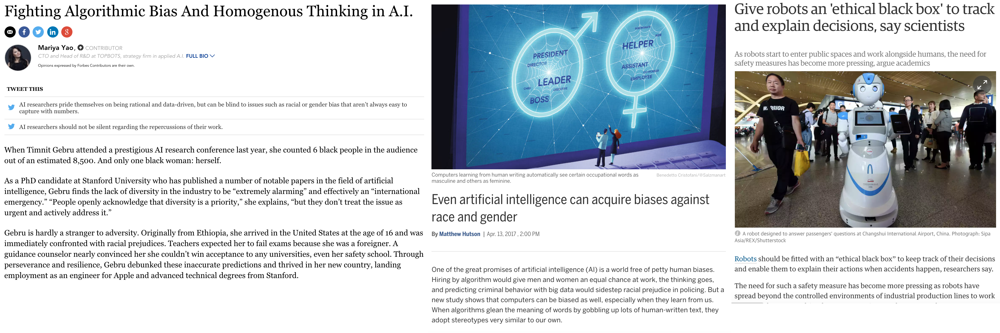

Singapore City-AI Meetup 3.0

I was honoured to be invited to present on Model Bias at Singapore City-AI’s 3rd Quarterly Meetup.
I presented a case study from Gojek- our drivers ranking model and various ways we can use to dissect the model in order to understand the relationship between features and prediction. I also highlighted the importance of evaluating the fairness of the model and how it impacts the overall system. Later, I used a case study from a credit default prediction challenge to demonstrate how we can use Partial Dependence Plot (PDP) to figure out how each feature affects the prediction. It was a great experience and I enjoyed interacting with other esteemed guest speakers from Nvidia, MSD, Allianz and the audience. It ended with a great panel discussion on bias in AI / ML models and how we can tackle that.
import xgboost as xgb
import pandas as pd
import numpy as np
import matplotlib.pyplot as plt
%matplotlib inline
import xgbfir
pd.options.display.max_columns = 100
pd.options.display.max_rows = 100
from plotly.offline import download_plotlyjs, init_notebook_mode, plot, iplot
import plotly.graph_objs as go
init_notebook_mode(connected=True)
pd.set_option('max_colwidth',200)
import cPickle
import lime
from sklearn.model_selection import train_test_split
Peeking Inside the Blackbox
Discover potential bias inside machine learning models
Zane Lim
-
Senior data-scientist at Go-jek
-
Lead and mentor a sub-team of data-scientists
-
Mentor in Udacity’s AI nanodegree
-
Avid participant in Kaggle / data science hackathons
AI and Machine Learning: Applications and Pitfalls
Applications
- AlphaGo beats Ke Jie
- DeepMind training AI to beat human Starcraft players
- OpenAI Dota Bot destroys world’s best player
- https://www.nytimes.com/2017/05/01/us/politics/sent-to-prison-by-a-software-programs-secret-algorithms.html
- https://www.theguardian.com/technology/self-driving-cars
Pitfalls
- http://www.sciencemag.org/news/2017/04/even-artificial-intelligence-can-acquire-biases-against-race-and-gender
- https://www.forbes.com/sites/mariyayao/2017/05/01/dangers-algorithmic-bias-homogenous-thinking-ai/#2228a48270b3
- https://techcrunch.com/2016/12/10/5-unexpected-sources-of-bias-in-artificial-intelligence/
 Critical as more and more decisions are made using algorithms
Case study on Go-Jek

- On-demand mobile platform that provides a variety of complete services
- transportation (300,000 ojek and car driver partners)
- logistics / food delivery (100,000 food vendors)
- payment
- other on-demand services (masseurs, cleaners etc.)
- As of July 2017, downloaded more than 44 million times
- Operates in 35 cities in Indonesia- Jakarta, Bandung, Surabaya, Bali, Medan, Yogyakarta etc.
Drivers Ranking Model

- Real-time machine learning model that handles hundreds of driver assignment (per second) during peak hours
- Rank drivers who are available in the vicinity of customer whenever a booking is requested
- Based on certain criteria eg. probability of completion
- Assign the job to the top ranked driver
Features of Model
- basic features- transactional data (time of day, location, gps accuracy)
- derived features- drivers’ attributes (statistics, performance)
- re-trained everyday on a rolling window of historical data to ensure freshness
- deployed and a/b tested
Results
- Very successful, improved conversion rate and acceptance rate against control
- How do we assess biasness and fairness of the model?
- Walking on fine line, affects the livelihood of drivers, any perceived mistreatment will trigger riots
Dissect the model and identify potential bias
- Plot and visualize the “model” directly (individual trees in gradient boosting model)
- Relationship between feature and prediction
- Partial Dependence Plot (PDP) / Individual Conditional Expectation (ICE) Plot
- “Explains” the prediction
- Local Interpretable Model-agnostic Explanations (LIME)
Evaluate the impact of the model
- Fairness of the system- Gini coefficient of drivers income / jobs assigned
- Average score (probability) / rank for each driver
Promote transparency
- Monitor and measure driver complaints on not getting jobs
- Explain and provide suggestions to drivers on how they can improve their prospect of getting jobs (indirectly promote good behaviours)
Case study on Credit Card Default Payment
- A dataset containing, default payments, history of payments, bill statements and demographics of 30,000 credit card clients in Taiwan from April 2005 to September 2005
- Predict the probability of default payment in next month
https://www.kaggle.com/uciml/default-of-credit-card-clients-dataset
Lichman, M. (2013). UCI Machine Learning Repository [http://archive.ics.uci.edu/ml]. Irvine, CA: University of California, School of Information and Computer Science.
df = pd.read_csv("../data/UCI_Credit_Card.csv")
X = df.drop('default.payment.next.month', axis=1)
y = df['default.payment.next.month']
X_train, X_test, y_train, y_test = train_test_split(X, y, test_size=0.2, random_state=0)
with open("../data/xgb_clf.pkl") as f:
xgb_clf = cPickle.load(f)
- ID: ID of each client
- LIMIT_BAL: Amount of given credit in NT dollars (includes individual and family/supplementary credit
- SEX: Gender (1=male, 2=female)
- EDUCATION: (1=graduate school, 2=university, 3=high school, 4=others, 5=unknown, 6=unknown)
- MARRIAGE: Marital status (1=married, 2=single, 3=others)
- AGE: Age in years
- PAY_0: Repayment status in September, 2005 (-1=pay duly, 1=payment delay for one month, 2=payment delay for two months, … 8=payment delay for eight months, 9=payment delay for nine months and above)
- PAY_2: Repayment status in August, 2005 (scale same as above)
- PAY_3: Repayment status in July, 2005 (scale same as above)
- PAY_4: Repayment status in June, 2005 (scale same as above)
- PAY_5: Repayment status in May, 2005 (scale same as above)
- PAY_6: Repayment status in April, 2005 (scale same as above)
- BILL_AMT1: Amount of bill statement in September, 2005 (NT dollar)
- BILL_AMT2: Amount of bill statement in August, 2005 (NT dollar)
- BILL_AMT3: Amount of bill statement in July, 2005 (NT dollar)
- BILL_AMT4: Amount of bill statement in June, 2005 (NT dollar)
- BILL_AMT5: Amount of bill statement in May, 2005 (NT dollar)
- BILL_AMT6: Amount of bill statement in April, 2005 (NT dollar)
- PAY_AMT1: Amount of previous payment in September, 2005 (NT dollar)
- PAY_AMT2: Amount of previous payment in August, 2005 (NT dollar)
- PAY_AMT3: Amount of previous payment in July, 2005 (NT dollar)
- PAY_AMT4: Amount of previous payment in June, 2005 (NT dollar)
- PAY_AMT5: Amount of previous payment in May, 2005 (NT dollar)
- PAY_AMT6: Amount of previous payment in April, 2005 (NT dollar)
- default.payment.next.month: Default payment (1=yes, 0=no)
Plotting the “model” directly
features_importance = pd.DataFrame.from_dict(xgb_clf.get_fscore(), orient='index').reset_index().rename(columns={'index': 'features', 0: 'importance'})
features_importance.sort_values('importance', ascending=False, inplace=True)
features_importance.plot.barh(x='features', y='importance', figsize=(20,15))
plt.gca().invert_yaxis()

# plotting the trees directly
xgb.to_graphviz(xgb_clf, num_trees=0, size='150,200')

Partial Dependence Plot (PDP)
- A graph plotting the relationship of one single feature with the prediction / probability on average
- For each combination of a unique value of the feature with all other features, what is the average prediction / probability
- One caveat of using average is that it does not represent the usual case, as in any single realistic case, it depends on the combination with other features
def plotly_lines(df, x, y):
data = [
go.Scatter(
x=df[x], # assign x as the dataframe column 'x'
y=df[y],
name=x
)
]
return data
def plotly_figure(df, title, x_title, y_title, x, y):
layout = go.Layout(
title=title,
xaxis=dict(
title=x_title,
titlefont=dict(
family='Courier New, monospace',
size=18,
color='#7f7f7f'
)
),
yaxis=dict(
title=y_title,
titlefont=dict(
family='Courier New, monospace',
size=18,
color='#7f7f7f'
)
)
)
return go.Figure(data=plotly_lines(df, x, y), layout=layout)
df_plot = pd.read_csv("../data/age.csv")
ax = df_plot.plot(x='AGE', y='yhat', title='Age', figsize=(15,5), legend=False)
ax.set_xlabel("Age")
ax.set_ylabel("Probability of Default")
<matplotlib.text.Text at 0x11d3003d0>
df_plot = pd.read_csv("../data/sex.csv")
ax = df_plot.plot(x='SEX', y='yhat', title='Sex', figsize=(15,5), legend=False)
ax.set_xlabel("Sex")
ax.set_ylabel("Probability of Default")
<matplotlib.text.Text at 0x11d5f0290>

df_plot = pd.read_csv("../data/marriage.csv")
ax = df_plot.plot(x='MARRIAGE', y='yhat', title='Marital Status', figsize=(15,5), legend=False)
ax.set_xlabel("Marital Status")
ax.set_ylabel("Probability of Default")
<matplotlib.text.Text at 0x11d7bba50>

df.MARRIAGE.value_counts(normalize=True, sort=False)
0 0.001800
1 0.455300
2 0.532133
3 0.010767
Name: MARRIAGE, dtype: float64
df_plot = pd.read_csv("../data/education.csv")
ax = df_plot.plot(x='EDUCATION', y='yhat', title='Education', figsize=(15,5), legend=False)
ax.set_xlabel("Education")
ax.set_ylabel("Probability of Default")
<matplotlib.text.Text at 0x11d9a9a50>
df.EDUCATION.value_counts(normalize=True, sort=False)
0 0.000467
1 0.352833
2 0.467667
3 0.163900
4 0.004100
5 0.009333
6 0.001700
Name: EDUCATION, dtype: float64
Other techniques to dissect the black box
- Individual Conditional Expectation (ICE) Plot
- Local Interpretable Model-agnostic Explanations (LIME)
Reference:
- Why Should I Trust You?” Explaining the Predictions of Any Classifier
- Peeking Inside the Black Box: Visualizing Statistical Learning with Plots of Individual Conditional Expectation
- https://www.datarobot.com/blog/give-me-one-good-reason-to-trust-artificial-intelligence/
"””
Build AI with conscience, trust and empathy
"””
Thank you!
Zane Lim
Data Scientist / Engineer
My professional interests include machine learning, data engineering, data strategy, software architecture, CI/CD.